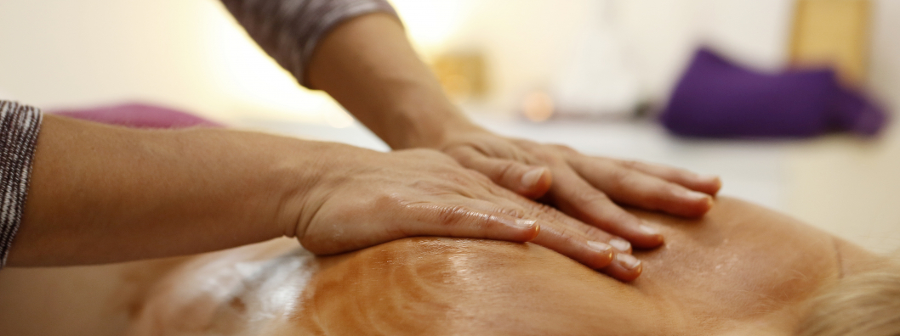
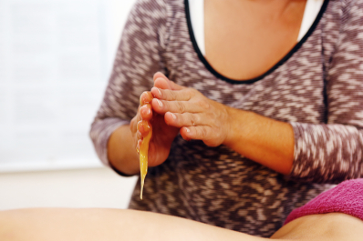
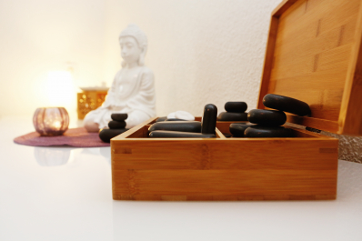
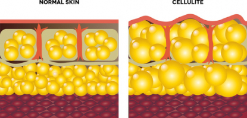
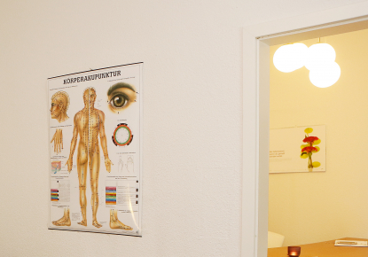

Aromaöl-Massage
Die Behandlung mit kostbaren Duftstoffen war schon vor der Antike bekannt und erfreut sich in Form der Aromaöl-Massage heute neuer Beliebtheit.
Bei der Aromaöl-Massage werden die erwärmten ätherischen Öle tief in die Muskulatur einmassiert. Diese Behandlung hat einen doppelten Effekt: Durch die Massage wirken die Aromastoffe auf den Körper ein; das Einatmen der Düfte unterstützt das innere Gleichgewicht.
Gemäß der Aromatherapie kann die Aromaöl-Massage je nach Duftstoff sowohl anregend als auch beruhigend wirken. Dadurch wird neben der Lösung von Muskelverspannungen auch eine mentale Auszeit erfahren.

Honig-Massage
Die Ursprünge der Honig-Massage liegen in Tibet und Russland. Die hohe Wirksamkeit des Honigs war jedoch schon im alten Ägypten bekannt, orientalische Frauen nutzten ihn bereits früh zur Schönheitspflege.
Während der Honig-Massage werden Schlacken und Giftstoffe im Körper durch die stark antibakterielle und heilende Wirkung des Honigs zunächst gelöst. Durch die Zupfmassagetechniken und die sich verändernde Konsistenz des Honigs kommt es zu einer tiefen Wirkung in das Gewebe hinein. Verspannungen und Verklebungen der oberen Gewebeschichten werden gelöst, es kommt zu einer kräftig angeregten Durchblutung. Dadurch werden die gelösten Stoffe nun vermehrt abtransportiert und ausgeschleust, so dass eine ganzheitliche Reinigung erfolgt.
Besonders bewährt hat sich die Honig-Massage im Bereich von Rücken und Oberschenkeln. Auch für das Gesicht ist sie sehr gut geeignet. Dort wird sie jedoch aufgrund des sehr viel feineren Hautbildes als Honig-Sahne-Massage angewandt. Auch jahreszeitlich ist die Wirkung der Honig-Massage nutzbar. Da sie auch dem Festsetzen von Bakterien in Lunge und Bronchien entgegenwirken kann, empfiehlt sie sich bei nass-kaltem Erkältungswetter sowohl präventiv als auch beschwerdelindernd.
Hot Stone-Massage
Bei der Hot Stone-Massage werden sowohl im Wasserbad auf über 50 Grad erhitzte Basaltsteine als auch kühle Marmorsteine verwendet. Dadurch entsteht eine Kombination aus Ganzkörpermassage, Temperaturreizen und Energiearbeit.
Die Hot Stone-Massage regt den Lymphfluss an, fördert durch die Wärme das Lösen von Muskelverspannungen und aktiviert die Selbstheilungskräfte des Körpers. Durch die Temperaturreize entsteht eine ähnliche Wirkung wie bei den bekannten Kneippschen Güssen, jedoch auf eine gemilderte Art, da die Reize punktuell gesetzt werden und nicht der gesamte Körper erhitzt oder gekühlt wird. Durch Stimulation einzelner Energiepunkte des Körpers trägt die Hot Stone-Massage zum Abbau von Stress und Anspannung bei.
Des weiteren werden durch die Wärme der Steine die Poren der Haut weit geöffnet, wodurch die Inhaltstoffe des Massageöls besonders gut aufgenommen werden. Aus diesem Grund eignet sich die Hot Stone-Massage auch zur Gesichtsbehandlung: Hier werden Wirkstoffe aus Ampullen und Antifalten-Behandlungen bis in tiefe Hautschichten eingeschleust.

Kräuterstempel-Massage
Die Ursprünge der Kräuterstempel-Massage liegen im ost-asiatischen Raum. Besonders in ayurvedischen Behandlungen wurden sie bereits früh erwähnt.
Bei der Kräuterstempel-Massage werden faustgroße Baumwollsäckchen mit Kräutern, Früchten, Gewürzen und weiteren wertvollen Inhaltsstoffen verwendet. Diese werden in warmem Öl erhitzt und dann in einer Kombination aus Wärmereizen, Akupressur und speziellen Massagetechniken eingesetzt. Je nach Wahl der Inhaltsstoffe kann die Durchblutung angeregt, Entschlackungs- und Entgiftungsprozesse beschleunigt werden, das Immunsystem gestärkt oder auch Anspannung und Stress abgemildert werden. Auch Blockaden und Verspannungen lösen sich durch die Massage mit den Kräuterstempeln. Äußerlich verbessert sich das Hautbild durch den Peeling-Effekt und die Zellregeneration wird durch die Inhaltsstoffe gefördert.
Da die Wahl der Inhaltsstoffe so extrem wichtig ist, werden in meiner Praxis keine industriellen Kräuterstempel verwendet. Nach persöhnlicher Absprache und Beratung werden Ihre Kräuterstempel individuell auf Sie und Ihre Bedürfnisse hin angefertigt.
Anti-Cellulite-Massage
Cellulite ist nicht schön: Sie kann bis zur Reduktion des Selbstbewusstseins und zur Einschränkung im täglichen Leben führen. Zum Glück kann man gegen die so genannte Orangenhaut etwas tun. Es handelt sich hier um Fetteinlagerungen im Bindegewebe, die durch stete Massage, unterstützt durch Bewegung und gesunde Ernährung, reduziert werden können.
Bei der Anti-Cellulite-Massage handelt es sich um eine kräftige Zupfmassage, welche zur Lösung der Fettdepots führt. Es kommt zu einer starken Rötung und dem Abtransport der gelösten Fettpartikel durch den Körper. Um eine Wirksamkeit zu zeigen, ist die Anti-Cellulite-Massage regelmässig zweimal im Monat durchzuführen. In der Regel ist bereits nach zehn Massagen eine Besserung zu sehen. Dadurch kann das Selbstbewusstsein steigen und der Umgang mit dem eigenen Körper wird wieder positiv.

Fußmassage
In der heutigen Zeit sind unsere Füße enormen Belastungen ausgesetzt. Wir gehen in Schuhen über asphaltierte Wege und Strassen, was nicht den natürlichen Anforderungen unseres Körpers entspricht. Deshalb dient die Fußmassage nicht nur dem Wohlbefinden, sondern auch der verdienten Pflege und Zuwendung unserer Füße.
Bei der Fußmassage werden die Füße zunächst in einem wohltuenden und pflegenden Fußbad gereinigt, danach erfolgt ein mildes Peeling. Erst im Anschluss daran erfolgt die eigentliche Massage, bei der Sie sich komplett entspannen können.
Fußreflexzonen-Massage
Die Fußreflexzonen-Massage ist eine Besonderheit unter den Fußmassagen. Gemäß der chinesischen und anderen asiatischen Medizinformen wurde schon von altersher der Zusammenhang zwischen jedem einzelnen Körperteil / Organ und dem dazugehörenden Reflexpunkt am Fuß erkannt. Hier ist es nun möglich, entweder stimulierend oder beruhigend nur über die Füße den Menschen zu behandeln und die Symptome des Patienten zu lindern.

Termin
Passt eine dieser Behandlungen zu Ihnen?
Das klären wir im Gespräch. Rufen Sie an oder schreiben Sie mir.
Termin anfragen- Praxis
- Uerdingerstr. 573
47800 Krefeld - Telefon
- 0173/8626293